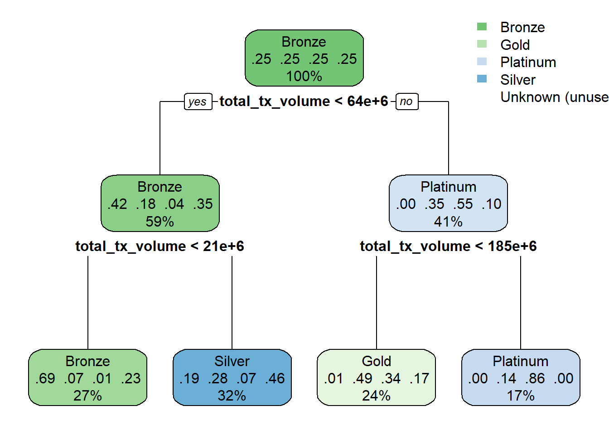

pacman::p_load(
tidyverse,
forcats,
rpart,
rpart.plot,
caret,
DT
)Proposal_Decision Tree
Module #3 of the Final Project :Decision Tree Explorer for CLV Segment Analysis
1.Introduction:
This prototype focuses on the Decision Tree Analysis module of our final visual analytics project.
The aim of this module is to help users identify which customer characteristics are most strongly associated with different customer lifetime value (CLV) segments.
A decision tree approach is selected because it is highly interpretable and can translate predictive patterns into simple if-then business rules.
2.Data Source
2.1 Data Source and Preparation:
This prototype is based on two datasets:
- customer_data.csv
- transactions_data.csv
The current prototype primarily uses **`customer_data.csv`** as the modeling table because it already contains customer-level demographic, product, behavioural, satisfaction, and value-related variables. The transaction-level dataset, `transactions_data.csv`, is reserved for future extension, where additional aggregated transaction features may be engineered and merged into the modeling dataset.
2.2 Analytical target
The selected target variable is: clv_segment
This variable is suitable for a decision tree prototype because:
- it is categorical,
- it has direct business meaning,
- it supports interpretable multi-class classification,
- it aligns well with the group project’s customer value analysis theme.
The key analytical question is:
Which customer characteristics are most strongly associated with different CLV segments?
2.3 Variable selection
To reduce unnecessary complexity in the first prototype, predictors are selected from several meaningful groups:
- demographic variables,
- product holding variables,
- app usage and engagement variables,
- transaction behaviour variables,
- satisfaction and support-related variables.
Example predictors include:
agegenderlocationincome_bracketoccupationeducation_levelhousehold_sizesavings_accountcredit_cardinvestment_accountactive_productsapp_logins_frequencyfeature_usage_diversitybill_payment_userauto_savings_enabledtx_countavg_tx_valuetotal_tx_volumetransaction_frequencypreferred_transaction_typecustomer_tenuresatisfaction_scorenps_scoresupport_tickets_countapp_store_ratingfeedback_sentiment
2.4 Excluded variables and leakage prevention
Some variables are excluded to avoid data leakage or analytical redundancy. These include:
customer_idcustomer_lifetime_valuefirst_txlast_txfirst_transaction_datelast_transaction_date
The main reason for excluding these fields is that they either function as identifiers or are too directly related to the target definition. Including such variables would artificially inflate model performance and reduce the interpretability value of the prototype.
2.5 Data cleaning and preprocessing
The following preprocessing steps are applied:
- remove identifier and leakage-prone columns,
- convert the target variable into a factor,
- convert character variables into factors,
- handle missing values,
- prepare the dataset for train-test split.
For missing value handling, a simple but robust approach is adopted:
- numeric variables: imputed using the median,
- categorical variables: assigned an
"Unknown"category.
This strategy is sufficient for the prototype stage because the main objective is to validate analytical feasibility and support UI design, rather than maximize model performance.
3. Analytical Design
3.1 Why decision tree?
This prototype adopts a classification tree model for the clv_segment target. The main reason is that decision trees provide a strong balance between analytical usefulness and interpretability.
A decision tree is especially suitable in this project context for the following reasons:
- it produces human-readable rules,
- it helps users understand which variables drive customer classification,
- it can be displayed visually in an intuitive way,
- it supports interactive parameter tuning in a Shiny environment.
Unlike more complex ensemble models, the tree structure itself is part of the analytical output. This makes it appropriate for visual analytics, where users are expected not only to obtain results, but also to interpret the model logic.
3.2 Design emphasis: interpretability over accuracy
The goal of this module is not simply to maximize predictive accuracy. Instead, the design emphasizes:
- transparency,
- visual interpretability,
- user interaction,
- business explanation.
For this reason, the prototype allows the user to adjust parameters such as:
- maximum tree depth,
- minimum split size,
- complexity parameter,
- predictor group selection.
By changing these parameters, users can compare a simpler tree against a more complex tree and evaluate the trade-off between readability and classification performance.
3.3 User-oriented analytical outputs
The prototype is designed to generate several types of outputs:
Tree visualization
Model performance summary
Rules table
Business insights section
This design reflects the needs of both technical and non-technical users. A technical user may want to inspect model behaviour, while a business stakeholder may be more interested in the high-level decision rules.
4. Prototype Implementation
This section presents the technical implementation of the decision tree prototype.
The workflow includes:
- loading required R packages
- loading the datasets
- performing data preprocessing
- preparing the modeling dataset
- training a classification tree
- evaluating model performance
- visualizing the tree structure
- extracting terminal node summaries for interpretation
The goal of this implementation is not to build the most accurate predictive model, but rather to validate the feasibility of an interpretable decision tree module that can later be integrated into the final Shiny visual analytics application.
4.1 Loading Required R Packages
The following R packages are used in this prototype:
- tidyverse – data manipulation and cleaning
- forcats – factor handling
- rpart – decision tree modeling
- rpart.plot – tree visualization
- caret – model evaluation and confusion matrix
- DT – interactive table output for later Shiny integration
4.2 Loading the Dataset
Two datasets are provided in the project:
- customer_data.csv – customer-level features
- transactions_data.csv – transaction-level records
For the current prototype, the primary modeling dataset is customer_data.csv, because it already contains aggregated behavioral and demographic variables.
customer_data <- read_csv("data/customer_data.csv")Rows: 48723 Columns: 54
── Column specification ────────────────────────────────────────────────────────
Delimiter: ","
chr (13): gender, location, income_bracket, occupation, education_level, ma...
dbl (29): customer_id, age, household_size, active_products, app_logins_fre...
lgl (7): savings_account, credit_card, personal_loan, investment_account, ...
date (5): first_tx, last_tx, last_survey_date, last_transaction_date, first...
ℹ Use `spec()` to retrieve the full column specification for this data.
ℹ Specify the column types or set `show_col_types = FALSE` to quiet this message.transactions_data <- read_csv("data/transactions_data.csv")Rows: 3159157 Columns: 4
── Column specification ────────────────────────────────────────────────────────
Delimiter: ","
chr (1): type
dbl (2): customer_id, amount
date (1): date
ℹ Use `spec()` to retrieve the full column specification for this data.
ℹ Specify the column types or set `show_col_types = FALSE` to quiet this message.glimpse(customer_data)Rows: 48,723
Columns: 54
$ customer_id <dbl> 93716481, 49020929, 52690950, 23199751, 619…
$ age <dbl> 44, 44, 45, 45, 44, 45, 44, 44, 45, 44, 44,…
$ gender <chr> "Male", "Male", "Male", "Male", "Female", "…
$ location <chr> "Pereira, Risaralda", "Cali, Valle del Cauc…
$ income_bracket <chr> "Very High", "Medium", "High", "High", "Med…
$ occupation <chr> "Engineer", "Construction Worker", "Constru…
$ education_level <chr> "Master", "Bachelor", "Bachelor", "High Sch…
$ marital_status <chr> "Married", "Married", "Married", "Single", …
$ household_size <dbl> 5, 2, 4, 2, 3, 4, 4, 3, 1, 3, 5, 3, 3, 7, 3…
$ acquisition_channel <chr> "Partnership", "Paid Ad", "Paid Ad", "Refer…
$ customer_segment <chr> "occasional", "regular", "inactive", "inact…
$ savings_account <lgl> TRUE, TRUE, TRUE, TRUE, TRUE, TRUE, TRUE, T…
$ credit_card <lgl> TRUE, FALSE, FALSE, FALSE, TRUE, TRUE, TRUE…
$ personal_loan <lgl> FALSE, FALSE, FALSE, FALSE, FALSE, FALSE, F…
$ investment_account <lgl> FALSE, FALSE, TRUE, TRUE, FALSE, TRUE, FALS…
$ insurance_product <lgl> TRUE, FALSE, TRUE, FALSE, FALSE, FALSE, FAL…
$ active_products <dbl> 1, 5, 3, 2, 1, 1, 1, 4, 2, 3, 1, 5, 3, 1, 1…
$ app_logins_frequency <dbl> 15, 30, 4, 15, 19, 15, 44, 22, 7, 11, 7, 30…
$ feature_usage_diversity <dbl> 3, 0, 4, 4, 1, 4, 6, 1, 1, 6, 3, 1, 2, 1, 3…
$ bill_payment_user <lgl> FALSE, TRUE, TRUE, TRUE, FALSE, TRUE, TRUE,…
$ auto_savings_enabled <lgl> FALSE, FALSE, FALSE, FALSE, FALSE, TRUE, FA…
$ credit_utilization_ratio <dbl> 0.17871029, NA, NA, NA, 0.40360553, 0.07786…
$ international_transactions <dbl> 1, 1, 1, 1, 0, 0, 0, 0, 0, 1, 0, 0, 0, 1, 0…
$ failed_transactions <dbl> 0, 0, 0, 1, 0, 0, 1, 1, 0, 0, 1, 0, 0, 1, 0…
$ tx_count <dbl> 76, 10, 10, 23, 18, 15, 24, 45, 134, 13, 18…
$ avg_tx_value <dbl> 1679872.4, 5445810.0, 640335.0, 660180.4, 1…
$ total_tx_volume <dbl> 127670300, 54458100, 6403350, 15184150, 262…
$ first_tx <date> 2023-01-05, 2023-02-05, 2023-01-31, 2023-0…
$ last_tx <date> 2023-12-25, 2023-12-20, 2023-12-12, 2023-1…
$ base_satisfaction <dbl> 9.213372, 6.073093, 8.198643, 7.529577, 6.6…
$ tx_satisfaction <dbl> 0.380, 0.050, 0.050, 0.115, 0.090, 0.075, 0…
$ product_satisfaction <dbl> 0.6, 0.2, 0.6, 0.4, 0.4, 0.6, 0.4, 0.4, 0.6…
$ satisfaction_score <dbl> 5, 3, 4, 4, 3, 4, 4, 4, 5, 4, 4, 5, 4, 3, 4…
$ nps_score <dbl> -7, -46, -29, -31, -47, -29, -34, -36, -4, …
$ last_survey_date <date> 2023-12-16, 2023-05-05, 2023-11-16, 2023-0…
$ support_tickets_count <dbl> 1, 1, 0, 2, 2, 1, 1, 0, 2, 0, 0, 2, 3, 1, 0…
$ resolved_tickets_ratio <dbl> 0.0000000, 1.0000000, 0.0000000, 0.5000000,…
$ app_store_rating <dbl> 3.5, 4.0, 5.0, 4.5, 4.0, 4.0, 5.0, 4.5, 4.5…
$ feedback_sentiment <chr> "Neutral", "Positive", "Positive", "Positiv…
$ feature_requests <chr> "Budgeting tools", NA, NA, "Cryptocurrency …
$ complaint_topics <chr> NA, NA, NA, NA, "App performance", NA, NA, …
$ clv_segment <chr> "Gold", "Bronze", "Gold", "Bronze", "Gold",…
$ monthly_transaction_count <dbl> 1.428571, 1.571429, 2.500000, 1.555556, 2.1…
$ average_transaction_value <dbl> 6054025.0, 2127413.6, 3575915.0, 1513353.6,…
$ total_transaction_volume <dbl> 60540250, 23401550, 35759150, 21186950, 116…
$ transaction_frequency <dbl> 0.03076923, 0.03293413, 0.05000000, 0.04778…
$ last_transaction_date <date> 2023-12-05, 2023-12-18, 2023-10-27, 2023-1…
$ preferred_transaction_type <chr> "Transfer", "Transfer", "Transfer", "Transf…
$ first_transaction_date <date> 2023-01-05, 2023-02-05, 2023-01-31, 2023-0…
$ weekend_transaction_ratio <dbl> 0.30000000, 0.18181818, 0.30000000, 0.14285…
$ avg_daily_transactions <dbl> 0.03076923, 0.03293413, 0.05000000, 0.04778…
$ customer_tenure <dbl> 11.633333, 11.500000, 8.766667, 10.733333, …
$ churn_probability <dbl> 0.3622688, 0.1817896, 0.3212651, 0.3366287,…
$ customer_lifetime_value <dbl> 312414808, 167022286, 19403711, 35978105, 3…The customer_data table contains customer-level attributes including:
- demographic information
- product holdings
- transaction behavior summaries
- satisfaction indicators
- customer value metrics
- CLV segment label
4.3 Data Preprocessing
To prepare the dataset for modeling, several preprocessing steps are performed.
These steps include:
- removing identifier and leakage-prone variables
- converting categorical variables to factors
- handling missing values
- preparing the final modeling table
Variables that may cause data leakage are removed before modeling. These include identifiers and variables that directly encode customer lifetime value.
customer_model <- customer_data %>%
select(
-customer_id,
-customer_lifetime_value,
-first_tx,
-last_tx,
-first_transaction_date,
-last_transaction_date
) %>%
mutate(
clv_segment = as.factor(clv_segment)
) %>%
mutate(across(where(is.character), as.factor)) %>%
mutate(
location = forcats::fct_lump_n(location, n = 10),
occupation = forcats::fct_lump_n(occupation, n = 10)
)Handling Missing Values
Missing values are handled using simple imputation strategies suitable for a prototype stage.
- Numeric variables → imputed with median
- Factor variables → assigned “Unknown” category
for (col in names(customer_model)) {
if (is.numeric(customer_model[[col]])) {
customer_model[[col]][is.na(customer_model[[col]])] <-
median(customer_model[[col]], na.rm = TRUE)
} else if (is.factor(customer_model[[col]])) {
customer_model[[col]] <-
fct_na_value_to_level(customer_model[[col]], level = "Unknown")
}
}After preprocessing, the dataset is ready for modeling.
glimpse(customer_model)Rows: 48,723
Columns: 48
$ age <dbl> 44, 44, 45, 45, 44, 45, 44, 44, 45, 44, 44,…
$ gender <fct> Male, Male, Male, Male, Female, Female, Mal…
$ location <fct> "Pereira, Risaralda", "Cali, Valle del Cauc…
$ income_bracket <fct> Very High, Medium, High, High, Medium, Medi…
$ occupation <fct> Engineer, Other, Other, Other, Other, Other…
$ education_level <fct> Master, Bachelor, Bachelor, High School, Ba…
$ marital_status <fct> Married, Married, Married, Single, Married,…
$ household_size <dbl> 5, 2, 4, 2, 3, 4, 4, 3, 1, 3, 5, 3, 3, 7, 3…
$ acquisition_channel <fct> Partnership, Paid Ad, Paid Ad, Referral, Pa…
$ customer_segment <fct> occasional, regular, inactive, inactive, po…
$ savings_account <lgl> TRUE, TRUE, TRUE, TRUE, TRUE, TRUE, TRUE, T…
$ credit_card <lgl> TRUE, FALSE, FALSE, FALSE, TRUE, TRUE, TRUE…
$ personal_loan <lgl> FALSE, FALSE, FALSE, FALSE, FALSE, FALSE, F…
$ investment_account <lgl> FALSE, FALSE, TRUE, TRUE, FALSE, TRUE, FALS…
$ insurance_product <lgl> TRUE, FALSE, TRUE, FALSE, FALSE, FALSE, FAL…
$ active_products <dbl> 1, 5, 3, 2, 1, 1, 1, 4, 2, 3, 1, 5, 3, 1, 1…
$ app_logins_frequency <dbl> 15, 30, 4, 15, 19, 15, 44, 22, 7, 11, 7, 30…
$ feature_usage_diversity <dbl> 3, 0, 4, 4, 1, 4, 6, 1, 1, 6, 3, 1, 2, 1, 3…
$ bill_payment_user <lgl> FALSE, TRUE, TRUE, TRUE, FALSE, TRUE, TRUE,…
$ auto_savings_enabled <lgl> FALSE, FALSE, FALSE, FALSE, FALSE, TRUE, FA…
$ credit_utilization_ratio <dbl> 0.17871029, 0.26585559, 0.26585559, 0.26585…
$ international_transactions <dbl> 1, 1, 1, 1, 0, 0, 0, 0, 0, 1, 0, 0, 0, 1, 0…
$ failed_transactions <dbl> 0, 0, 0, 1, 0, 0, 1, 1, 0, 0, 1, 0, 0, 1, 0…
$ tx_count <dbl> 76, 10, 10, 23, 18, 15, 24, 45, 134, 13, 18…
$ avg_tx_value <dbl> 1679872.4, 5445810.0, 640335.0, 660180.4, 1…
$ total_tx_volume <dbl> 127670300, 54458100, 6403350, 15184150, 262…
$ base_satisfaction <dbl> 9.213372, 6.073093, 8.198643, 7.529577, 6.6…
$ tx_satisfaction <dbl> 0.380, 0.050, 0.050, 0.115, 0.090, 0.075, 0…
$ product_satisfaction <dbl> 0.6, 0.2, 0.6, 0.4, 0.4, 0.6, 0.4, 0.4, 0.6…
$ satisfaction_score <dbl> 5, 3, 4, 4, 3, 4, 4, 4, 5, 4, 4, 5, 4, 3, 4…
$ nps_score <dbl> -7, -46, -29, -31, -47, -29, -34, -36, -4, …
$ last_survey_date <date> 2023-12-16, 2023-05-05, 2023-11-16, 2023-0…
$ support_tickets_count <dbl> 1, 1, 0, 2, 2, 1, 1, 0, 2, 0, 0, 2, 3, 1, 0…
$ resolved_tickets_ratio <dbl> 0.0000000, 1.0000000, 0.0000000, 0.5000000,…
$ app_store_rating <dbl> 3.5, 4.0, 5.0, 4.5, 4.0, 4.0, 5.0, 4.5, 4.5…
$ feedback_sentiment <fct> Neutral, Positive, Positive, Positive, Posi…
$ feature_requests <fct> "Budgeting tools", "Unknown", "Unknown", "C…
$ complaint_topics <fct> Unknown, Unknown, Unknown, Unknown, App per…
$ clv_segment <fct> Gold, Bronze, Gold, Bronze, Gold, Bronze, B…
$ monthly_transaction_count <dbl> 1.428571, 1.571429, 2.500000, 1.555556, 2.1…
$ average_transaction_value <dbl> 6054025.0, 2127413.6, 3575915.0, 1513353.6,…
$ total_transaction_volume <dbl> 60540250, 23401550, 35759150, 21186950, 116…
$ transaction_frequency <dbl> 0.03076923, 0.03293413, 0.05000000, 0.04778…
$ preferred_transaction_type <fct> Transfer, Transfer, Transfer, Transfer, Pay…
$ weekend_transaction_ratio <dbl> 0.30000000, 0.18181818, 0.30000000, 0.14285…
$ avg_daily_transactions <dbl> 0.03076923, 0.03293413, 0.05000000, 0.04778…
$ customer_tenure <dbl> 11.633333, 11.500000, 8.766667, 10.733333, …
$ churn_probability <dbl> 0.3622688, 0.1817896, 0.3212651, 0.3366287,…4.4 Selecting Predictors
To construct the classification tree, a set of meaningful predictors is selected from demographic, product, behavioral, and satisfaction-related features.
predictors <- c(
"age",
"gender",
"location",
"income_bracket",
"occupation",
"education_level",
"household_size",
"savings_account",
"credit_card",
"investment_account",
"active_products",
"app_logins_frequency",
"feature_usage_diversity",
"bill_payment_user",
"auto_savings_enabled",
"tx_count",
"avg_tx_value",
"total_tx_volume",
"transaction_frequency",
"preferred_transaction_type",
"customer_tenure",
"satisfaction_score",
"nps_score",
"support_tickets_count",
"app_store_rating",
"feedback_sentiment"
)
# keep only predictors that exist in dataset
predictors <- predictors[predictors %in% names(customer_model)]
model_df <- customer_model %>%
select(all_of(c("clv_segment", predictors))) %>%
drop_na()
glimpse(model_df)Rows: 48,723
Columns: 27
$ clv_segment <fct> Gold, Bronze, Gold, Bronze, Gold, Bronze, B…
$ age <dbl> 44, 44, 45, 45, 44, 45, 44, 44, 45, 44, 44,…
$ gender <fct> Male, Male, Male, Male, Female, Female, Mal…
$ location <fct> "Pereira, Risaralda", "Cali, Valle del Cauc…
$ income_bracket <fct> Very High, Medium, High, High, Medium, Medi…
$ occupation <fct> Engineer, Other, Other, Other, Other, Other…
$ education_level <fct> Master, Bachelor, Bachelor, High School, Ba…
$ household_size <dbl> 5, 2, 4, 2, 3, 4, 4, 3, 1, 3, 5, 3, 3, 7, 3…
$ savings_account <lgl> TRUE, TRUE, TRUE, TRUE, TRUE, TRUE, TRUE, T…
$ credit_card <lgl> TRUE, FALSE, FALSE, FALSE, TRUE, TRUE, TRUE…
$ investment_account <lgl> FALSE, FALSE, TRUE, TRUE, FALSE, TRUE, FALS…
$ active_products <dbl> 1, 5, 3, 2, 1, 1, 1, 4, 2, 3, 1, 5, 3, 1, 1…
$ app_logins_frequency <dbl> 15, 30, 4, 15, 19, 15, 44, 22, 7, 11, 7, 30…
$ feature_usage_diversity <dbl> 3, 0, 4, 4, 1, 4, 6, 1, 1, 6, 3, 1, 2, 1, 3…
$ bill_payment_user <lgl> FALSE, TRUE, TRUE, TRUE, FALSE, TRUE, TRUE,…
$ auto_savings_enabled <lgl> FALSE, FALSE, FALSE, FALSE, FALSE, TRUE, FA…
$ tx_count <dbl> 76, 10, 10, 23, 18, 15, 24, 45, 134, 13, 18…
$ avg_tx_value <dbl> 1679872.4, 5445810.0, 640335.0, 660180.4, 1…
$ total_tx_volume <dbl> 127670300, 54458100, 6403350, 15184150, 262…
$ transaction_frequency <dbl> 0.03076923, 0.03293413, 0.05000000, 0.04778…
$ preferred_transaction_type <fct> Transfer, Transfer, Transfer, Transfer, Pay…
$ customer_tenure <dbl> 11.633333, 11.500000, 8.766667, 10.733333, …
$ satisfaction_score <dbl> 5, 3, 4, 4, 3, 4, 4, 4, 5, 4, 4, 5, 4, 3, 4…
$ nps_score <dbl> -7, -46, -29, -31, -47, -29, -34, -36, -4, …
$ support_tickets_count <dbl> 1, 1, 0, 2, 2, 1, 1, 0, 2, 0, 0, 2, 3, 1, 0…
$ app_store_rating <dbl> 3.5, 4.0, 5.0, 4.5, 4.0, 4.0, 5.0, 4.5, 4.5…
$ feedback_sentiment <fct> Neutral, Positive, Positive, Positive, Posi…4.5 Train-Test Split
The dataset is split into training and testing subsets to evaluate classification performance.
A 70% training / 30% testing split is used.
set.seed(123)
train_index <- createDataPartition(
model_df$clv_segment,
p = 0.7,
list = FALSE
)
train_data <- model_df[train_index, ]
test_data <- model_df[-train_index, ]
dim(train_data)[1] 34107 27dim(test_data)[1] 14616 274.6 Training the Decision Tree
A classification tree is trained using the rpart package.
Key parameters used in this prototype include:
- maxdepth = 4
- minsplit = 30
- cp = 0.01
These values help maintain a moderately interpretable tree structure.
tree_formula <- as.formula(
paste("clv_segment ~", paste(predictors, collapse = " + "))
)
tree_model <- rpart(
tree_formula,
data = train_data,
method = "class",
control = rpart.control(
maxdepth = 4,
minsplit = 30,
cp = 0.01
)
)
tree_modeln= 34107
node), split, n, loss, yval, (yprob)
* denotes terminal node
1) root 34107 25580 Bronze (0.250007330 0.249978010 0.250007330 0.250007330)
2) total_tx_volume< 6.388475e+07 20120 11637 Bronze (0.421620278 0.182703777 0.042395626 0.353280318)
4) total_tx_volume< 2.130695e+07 9174 2807 Bronze (0.694026597 0.066165250 0.011009374 0.228798779) *
5) total_tx_volume>=2.130695e+07 10946 5937 Silver (0.193312626 0.280376393 0.068700895 0.457610086) *
3) total_tx_volume>=6.388475e+07 13987 6313 Platinum (0.003145778 0.346750554 0.548652320 0.101451348)
6) total_tx_volume< 1.854238e+08 8333 4247 Gold (0.005280211 0.490339614 0.335653426 0.168726749) *
7) total_tx_volume>=1.854238e+08 5654 777 Platinum (0.000000000 0.135125575 0.862575168 0.002299257) *4.7 Model Evaluation
The model is evaluated using predictions on the test dataset.
tree_predictions <- predict(
tree_model,
test_data,
type = "class"
)
conf_matrix <- confusionMatrix(
tree_predictions,
test_data$clv_segment
)
conf_matrixConfusion Matrix and Statistics
Reference
Prediction Bronze Gold Platinum Silver Unknown
Bronze 2713 228 44 916 0
Gold 30 1789 1164 629 0
Platinum 0 327 2116 7 0
Silver 911 1310 330 2102 0
Unknown 0 0 0 0 0
Overall Statistics
Accuracy : 0.5966
95% CI : (0.5886, 0.6046)
No Information Rate : 0.25
P-Value [Acc > NIR] : < 2.2e-16
Kappa : 0.4621
Mcnemar's Test P-Value : NA
Statistics by Class:
Class: Bronze Class: Gold Class: Platinum Class: Silver
Sensitivity 0.7425 0.4896 0.5791 0.5753
Specificity 0.8916 0.8337 0.9695 0.7673
Pos Pred Value 0.6955 0.4953 0.8637 0.4518
Neg Pred Value 0.9122 0.8305 0.8736 0.8442
Prevalence 0.2500 0.2500 0.2500 0.2500
Detection Rate 0.1856 0.1224 0.1448 0.1438
Detection Prevalence 0.2669 0.2471 0.1676 0.3183
Balanced Accuracy 0.8170 0.6616 0.7743 0.6713
Class: Unknown
Sensitivity NA
Specificity 1
Pos Pred Value NA
Neg Pred Value NA
Prevalence 0
Detection Rate 0
Detection Prevalence 0
Balanced Accuracy NAThe confusion matrix provides several useful metrics, including:
- overall accuracy
- sensitivity and specificity
- class-level performance
These metrics help assess whether the decision tree provides reasonable classification results.
4.8 Decision Tree Visualization
One of the most important outputs of this module is the tree visualization, which allows users to understand how the classification is performed.
rpart.plot(
tree_model,
type = 2,
extra = 104,
fallen.leaves = TRUE,
box.palette = "GnBu"
)
The tree diagram shows:
- which variables are used for splitting,
- how customers are divided into segments,
- which terminal nodes correspond to specific CLV groups.
This visual structure makes the model highly interpretable.
4.9 Extracting Terminal Node Rules
To support rule interpretation, information from the terminal nodes of the tree can be extracted.
leaf_nodes <- tibble(
node = rownames(tree_model$frame),
split_variable = tree_model$frame$var,
sample_size = tree_model$frame$n,
predicted_class = tree_model$frame$yval
) %>%
filter(split_variable == "<leaf>")
leaf_nodes# A tibble: 4 × 4
node split_variable sample_size predicted_class
<chr> <chr> <int> <dbl>
1 4 <leaf> 9174 1
2 5 <leaf> 10946 4
3 6 <leaf> 8333 2
4 7 <leaf> 5654 3Each terminal node corresponds to a set of implicit classification rules derived from the path of splits leading to that node.
These rules can later be translated into human-readable statements such as:
In the final Shiny application, these rules will be presented in a more interactive and interpretable format.
4.10 Summary
This section demonstrates a full implementation pipeline for the decision tree prototype:
- loading datasets
- preprocessing data
- selecting predictors
- training a classification tree
- evaluating model performance
- visualizing the decision tree
- extracting terminal node information
The results confirm that a decision tree model can be successfully constructed using the available customer-level dataset. The tree structure also provides interpretable patterns that can be integrated into the final visual analytics dashboard.